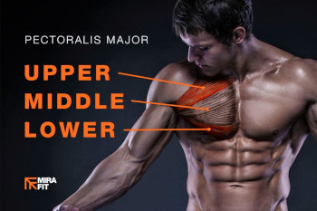
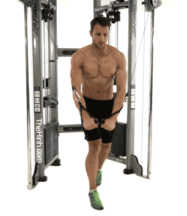
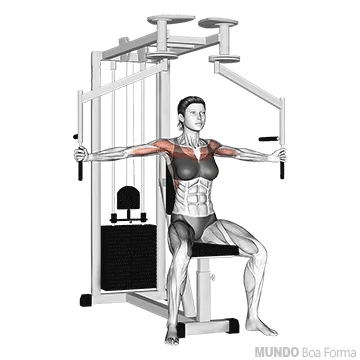
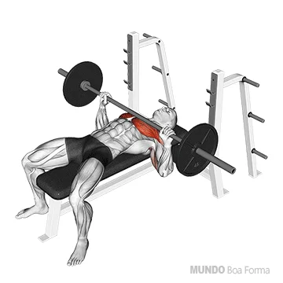
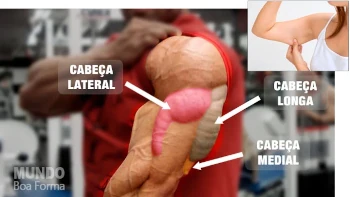
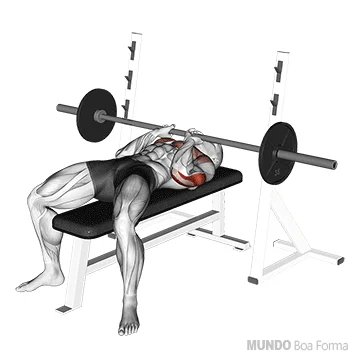

Peito 12 séries (14-12-10-8)
O peito é dividido em 3 partes: superior, médio e inferior. Quando treinamos o peitoral outros músculos atuam em conjunto como o tríceps e o deltóide. É impossível desligar um do outro, ou melhor, isolar somente o peito, mas existem estratégias para o treino.
CROSS OVER POLIA ALTA
O crossover polia alta é um exercicio bem completo que desenvolve e estimula o peitoral inferior
PEITO MAQUINA VOADOR
Crucifixo no voador, onde os principais músculos. recrutados são: peitoral maior e deltóide anterior
SUPINO BANCO RETO COM BARRA
No Supino, os principais musculos recrutados são: peitoral maior, deltóide (ombros) anterior e tríceps.

SUPINO INCLINADO BANCO A 30° COM BARRA RETA - PEGADA ABERTA
Para ter uma exigência muscular do peitoral e do tríceps braquial, Neves sugere trabalhar com o banco inclinado a 30° e mãos a uma distância que promova um ângulo de 90° na articulação do cotovelo quando a barra estiver próxima ao peitoral. Assim, a atividade fica segura e equilibrada também. Trabalha o ombro, peitoral e costas

PULLOVER COM HALTER BANCO RETO
Esse é um exercício de treino de costas com halteres que consegue trabalhar o dorso, a região muscular intercostal e o serrátil anterior. Além disso, essa série consegue fazer o acionamento do peitoral e dos tríceps de modo secundário
Tríceps 9 séries (12-10-8)
Dividido em 3 porções: cabeça longa, lateral e medial

TRÍCEPS TESTA COM BARRA
Neste exercício, dê preferência para barra w com pegada fechada. Trabalha tanto a cabeça lateral como a cabeça longa
TRÍCEPS SUPINO COM BARRA
No supino, dê prefererência para a barra w com pegada fechada. trabalha a porçao medial do triceps

TRICEPS PUXADA NO PULLEY
Polia alta com barra reta ou inclinada.Temos aqui um exercício completo, que trabalha a cabeça lateral do tríceps melhor do que qualquer outro movimento